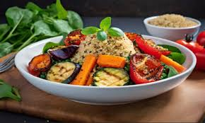

Recetas
Recetas
 Pollo
Pollo
 Pescado
Pescado
 Atun
Atun
 Veganas
Veganas
 Vegetarianas
Vegetarianas
 Quinoa
Quinoa

Quinoa con verduras asadas
Quinoa acompañada de coloridas y sabrosas verduras asadas, perfecta para un almuerzo completo y lleno de nutrientes.
Dificultad
Medio

Personas
4

TOTAL
40MIN
Ingredientes:
- 1 taza de quinoa
- 1 pimiento rojo, cortado en tiras
- 1 zucchini (calabacín), cortado en rodajas
- 1 berenjena, cortada en cubos
- 1 cebolla morada, cortada en rodajas
- 2 cucharadas de aceite de oliva
- 1 cucharadita de romero seco
- Sal y pimienta al gusto
Información nutricional (aproximada por porción):
- Calorías: 350 kcal
- Proteínas: 10 g
- Grasas: 14 g
- Carbohidratos: 45 g
- Fibra: 8 g
A cocinar:
- Precalienta el horno a 200°C (400°F). Coloca las verduras (pimiento, zucchini, berenjena y cebolla) en una bandeja para hornear y rocía con aceite de oliva. Agrega el romero, sal y pimienta.
- Asa las verduras durante 25-30 minutos, revolviendo a mitad de tiempo, hasta que estén doradas y tiernas.
- Cocina la quinoa como se indica en la receta anterior.
- Sirve la quinoa con las verduras asadas por encima. Puedes agregar un chorrito de aceite de oliva extra si lo deseas.